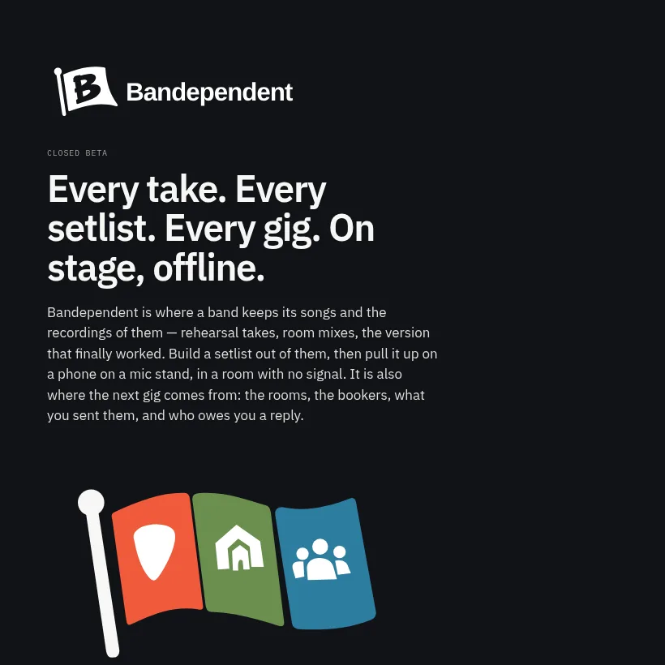

App Work
Product prototypes, internal tools, and focused web apps built with the shortest honest path from idea to shipped behavior.
Apps / AI systems / consulting / useful miscellany
Small-batch software from Andy Barilla for founders and lean product teams: pragmatic apps, agent-assisted workflows, and systems that solve the problem without joining a parade.
working posture
Use what already works. Keep exits open. Build the part that is yours. Doll & Robot Labs helps small teams ship when judgment matters more than ceremony and the right answer is usually smaller than the industry default.
Product prototypes, internal tools, and focused web apps built with the shortest honest path from idea to shipped behavior.
LLM pipelines, agent workflows, document-heavy automation, and the boring glue that turns model output into dependable production work.
Architecture, delivery strategy, technical due diligence, and senior engineering help for teams trying to cut through expensive noise.
now shipping
Built for working bands: keep songs, takes, and shared setlists in one place, then pull them up on stage without a signal. A public page gives bookers the details they need. In closed beta.
bandependent.com →
house rules